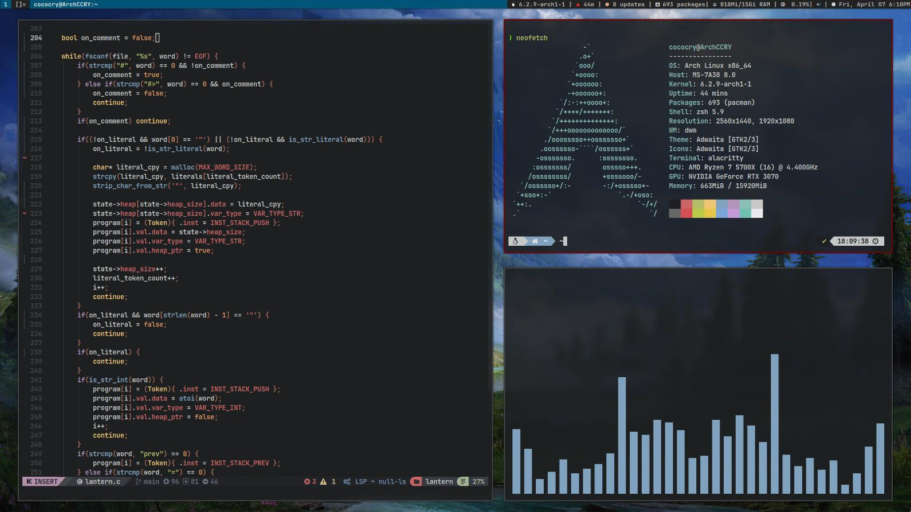

Gallery
- 


GNU/Linux is a free and open source software operating system for computers. The operating system is a collection of the basic instructions that tell the electronic parts of the computer what to do and how to work. Free, Libre and open source software (FLOSS) means that everyone has the freedom to use it, see how it works, and change it. GNU/Linux is a collaborative effort between the GNU project, formed in 1983 to develop the GNU operating system and the development team of Linux, a kernel. Linux is also used without GNU in embedded systems, mobile phones, and more. These can include things like Android or ChromeOS. GNU itself is also used without Linux, some examples appear in projects like Debian/kFreebsd and Guix GNU/Hurd.